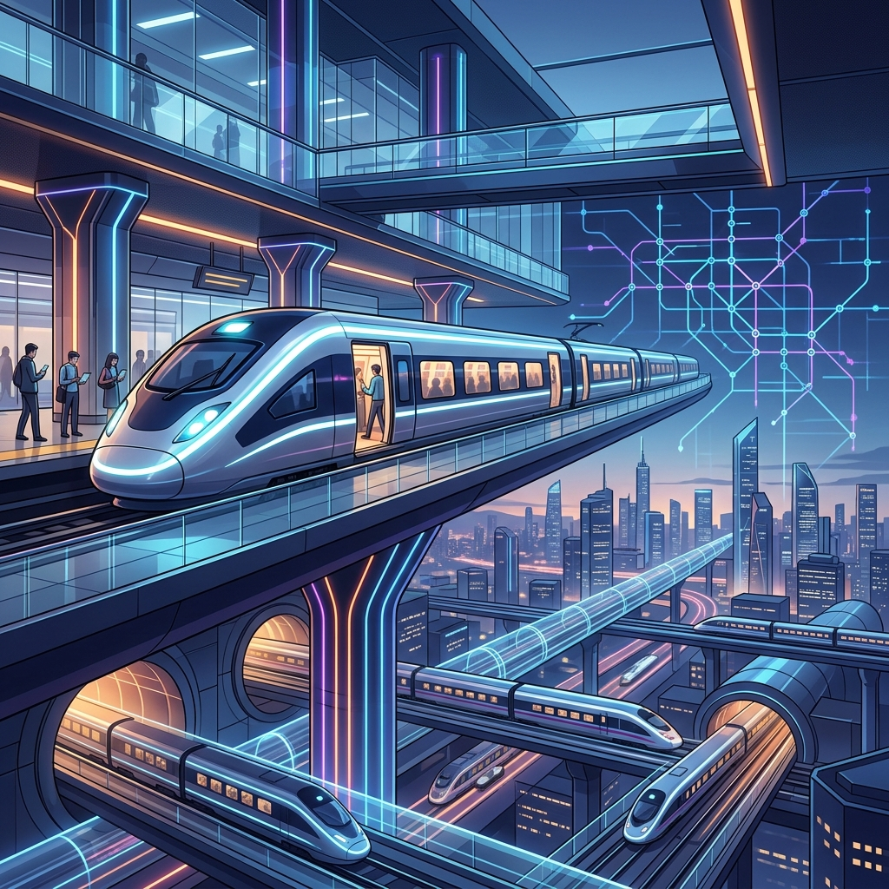
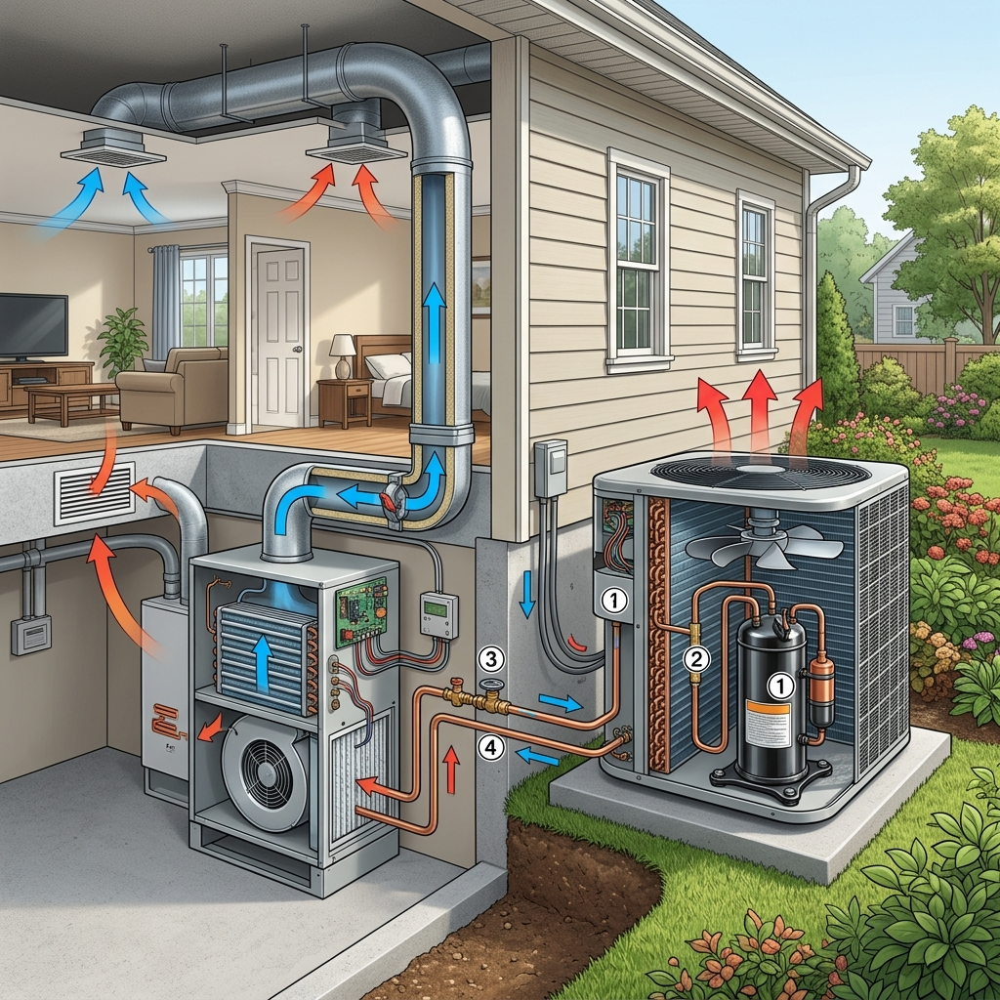

แนวคิดหลักและนิยามของ "ระบบ"
เทคโนโลยี (Technology) คือ สิ่งที่มนุษย์สร้างขึ้นหรือพัฒนาขึ้นเพื่อแก้ปัญหา สนองความต้องการ หรือเพิ่มความสามารถในการทำงานของมนุษย์ โดยอาจอยู่ในรูปแบบของชิ้นงาน (Product) เช่น โทรศัพท์ รถยนต์ หรือวิธีการ (Process) เช่น ขั้นตอนการคัดกรองโรค ระบบขนส่ง
การทำงานของเทคโนโลยีมักจะดำเนินงานในลักษณะของ "ระบบ" (System) ซึ่งหมายถึง กลุ่มของส่วนประกอบต่าง ๆ ตั้งแต่สองส่วนขึ้นไปประกอบเข้าด้วยกันและทำงานสัมพันธ์กันเพื่อให้บรรลุวัตถุประสงค์เดียวกัน โดยระบบแบ่งออกเป็น 2 ประเภทใหญ่ ๆ คือ:
1. ระบบทางธรรมชาติ
ระบบที่เกิดขึ้นและดำเนินไปเองตามธรรมชาติโดยไม่ใช้ฝีมือของมนุษย์
- ระบบลำเลียงน้ำของพืช: ราก ลำต้น ใบ ทำงานประสานกันเพื่อส่งน้ำและแร่ธาตุ
- ระบบย่อยอาหารของมนุษย์: ปาก กระเพาะ ลำไส้ ทำงานร่วมกันเพื่อย่อยและดูดซึมสารอาหาร
2. ระบบที่มนุษย์สร้างขึ้น
ระบบที่มนุษย์พัฒนาขึ้นเพื่อช่วยอำนวยความสะดวกหรือแก้ปัญหาในชีวิตประจำวัน
- ระบบรถไฟฟ้า: ราง รถ ข้อมูลควบคุม และสถานี ทำงานร่วมกันเพื่อรับส่งผู้โดยสาร
- ระบบบำบัดน้ำเสีย: ท่อระบาย ถังกรอง สารเคมี ทำงานร่วมกันเพื่อปรับปรุงคุณภาพน้ำ

องค์ประกอบของระบบทางเทคโนโลยี
ในการทำงานของเทคโนโลยีเกือบทุกประเภท จะมีองค์ประกอบพื้นฐาน 4 ส่วนที่เกี่ยวข้องกันอย่างเป็นระบบ เรียกว่า ระบบทางเทคโนโลยี (Technological System):
ตัวป้อน (Input)
ทรัพยากร ความต้องการ หรือปัญหาที่นำเข้าสู่ระบบเพื่อเริ่มต้นการทำงาน
กระบวนการ (Process)
การดำเนินงานหรือปฏิบัติงานของเครื่องกล/ระบบเพื่อเปลี่ยนรูปตัวป้อน
ผลผลิต (Output)
ผลลัพธ์หรือชิ้นงานที่ได้จากการทำงานของระบบสำเร็จตามเป้าหมาย
ข้อมูลย้อนกลับ (Feedback)
ข้อมูลที่ใช้วัดผลผลิตที่เกิดขึ้นเพื่อส่งกลับไปทำการปรับปรุงหรือควบคุมตัวป้อน/กระบวนการทำงานให้เป็นไปตามที่ต้องการ (เช่น ระบบเซนเซอร์ตัดไฟของหม้อหุงข้าวไฟฟ้าเมื่อข้าวสุกแล้ว)
ระบบทางเทคโนโลยีที่ซับซ้อน (Complex Systems)
ในชีวิตจริง เทคโนโลยีหลายชนิดมีฟังก์ชันการทำงานที่หลากหลายและต้องการประสิทธิภาพที่สูงขึ้น จึงไม่ได้ประกอบด้วยวงจรเดี่ยว ๆ แต่ประกอบด้วย "ระบบย่อย" (Subsystems) ตั้งแต่ 2 ระบบขึ้นไป ที่ทำงานเชื่อมโยงสัมพันธ์กันอย่างซับซ้อน
เครื่องปรับอากาศเป็นระบบทางเทคโนโลยีที่ซับซ้อน ประกอบด้วยระบบย่อยที่ทำงานประสานกันดังนี้:
ระบบทำความเย็น
เปลี่ยนสารทำความเย็นให้มีอุณหภูมิต่ำเพื่อลดอุณหภูมิของอากาศในห้อง (ตัวป้อน: ไฟฟ้า, กระบวนการ: คอมเพรสเซอร์และคอยล์เย็น)
ระบบหมุนเวียนอากาศ
พัดลมคอยล์เย็นจะพัดอากาศอุ่นจากในห้องให้ผ่านคอยล์เย็น แล้วส่งลมเย็นกลับออกมา (ตัวป้อน: ไฟฟ้าและลมร้อน)
ระบบควบคุมอุณหภูมิ
เทอร์โมสตัททำหน้าที่ตรวจวัดอุณหภูมิ หากพบว่าได้อุณหภูมิที่กำหนด จะสั่งการให้หยุดทำความเย็นชั่วคราว (ข้อมูลย้อนกลับ)

การทำงานผิดพลาดของระบบ (System Failure)
เนื่องจากระบบที่ซับซ้อนต้องอาศัยการเชื่อมต่อของระบบย่อย หากระบบย่อยใดระบบย่อยหนึ่ง ทำงานผิดพลาดหรือชำรุดเสียหาย จะส่งผลกระทบต่อระบบหลักทั้งหมด ทำให้ไม่สามารถใช้เทคโนโลยีนั้นได้เลยหรือใช้งานได้ไม่เต็มประสิทธิภาพ
| เทคโนโลยีหลัก | ระบบย่อยที่ผิดพลาด/เสียหาย | ผลกระทบต่อระบบโดยรวม |
|---|---|---|
| เครื่องปรับอากาศ | ระบบระบายความร้อนชำรุด (พัดลมคอยล์ร้อนไม่ทำงาน) | คอมเพรสเซอร์จะร้อนจัดและหยุดทำงาน แอร์พ่นลมปกติออกแต่ไม่มีความเย็น |
| รถจักรยานยนต์ | ระบบเบรกชำรุด (สายเบรกขาดหรือผ้าเบรกหมด) | รถเคลื่อนที่ได้ปกติแต่ไม่สามารถชะลอหรือหยุดรถได้ ก่อให้เกิดอันตรายรุนแรง |
| โทรศัพท์มือถือ | ระบบรับสัญญาณชำรุด (เสาสัญญาณภายในมีปัญหา) | เครื่องเปิดติด แอปฯ ใช้งานได้ แต่ไม่สามารถโทรออกหรือเชื่อมต่ออินเทอร์เน็ตได้ |
การป้องกัน (Preventive Maintenance): เราจำเป็นต้องเรียนรู้โครงสร้างของระบบย่อยเพื่อทำการตรวจสอบและบำรุงรักษาอย่างสม่ำเสมอ เช่น ตรวจเช็กลมยางและผ้าเบรกของรถยนต์ ตรวจล้างตัวกรองอากาศของเครื่องปรับอากาศตามกำหนดเวลา
การเปลี่ยนแปลงและผลกระทบของเทคโนโลยี
เทคโนโลยีมีการปรับปรุงและเปลี่ยนแปลงอยู่เสมอ โดยปัจจัยหลักที่ส่งผลต่อการเปลี่ยนแปลง ได้แก่ ความต้องการของมนุษย์ ความก้าวหน้าทางวิชาการ สภาพเศรษฐกิจ วัฒนธรรม และสิ่งแวดล้อม
การเปลี่ยนแปลงดังกล่าวนอกจากนำมาซึ่งความสะดวกสบายแล้ว ยังส่งผลกระทบต่อสังคมในหลากหลายมิติ ซึ่งเราต้องประเมินและวิเคราะห์เพื่อเตรียมความพร้อม:
- ด้านมนุษย์และสังคม: (บวก) ติดต่อสื่อสารสะดวกรวดเร็ว เข้าถึงองค์ความรู้ได้ง่ายขึ้น (ลบ) ลดปฏิสัมพันธ์แบบพบเจอหน้ากัน เกิดปัญหาความปลอดภัยทางไซเบอร์
- ด้านเศรษฐกิจ: (บวก) เพิ่มประสิทธิภาพและกำลังการผลิตด้วยเครื่องจักรทันสมัย (ลบ) อัตราการเลิกจ้างแรงงานคนในบางตำแหน่งเพิ่มขึ้น
- ด้านสิ่งแวดล้อม: (บวก) มีพลังงานสะอาด รถยนต์ไฟฟ้าช่วยลดคาร์บอน (ลบ) ปัญหาขยะอิเล็กทรอนิกส์ (E-Waste) เพิ่มขึ้นอย่างมหาศาล